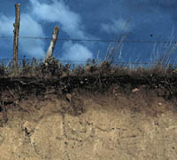
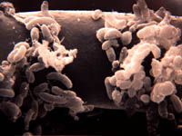
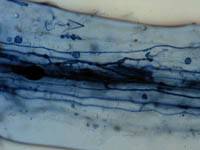

|
|
| Soil Biology is the study of living organisms in soils - their form, interactions, products and environment. Soil organisms are essential to both soil development and its long term sustainability. The formation and breakdown of humus is key to the understanding of nutrient cycles and available nutrients. | |||
 Humus and Soil Formation The fascinating process of organic decay which is crucial to soil building and the recycling of nutrients, results in the formation of a rich finely divided substance known as humus. The humus is usually in the top layer of a soil, just below accumulated plant litter. Saskatchewan soils are humus rich which gives a dark brown or black surface layer as seen in the image. The soil zones of Saskatchewan are named according to the horizon colours. An interesting contribution to soil formation is provided by the work of lichen. On bare rock, lichens are usually the first plants to be established. They are able to cling to rock with tiny hair-like roots. In order to get the nutrients they need, lichen secrete chemicals into the surface of bare rock. This weathers the rock and creates a thin layer of broken mineral matter or parent material, thus beginning the process of soil formation. As lichen die, more organic matter accumulates. Debris brought by wind and water gets caught in the lichen. Eventually there is enough soil formed for mosses to grow and later ferns, grasses and other herbaceous plants. Therefore, lichen play a crucial role in the development of soil on bare rock. | |||
 Role of Microorganisms Living organisms obtain nutrients from humus and most soil samples support high populations of these microorganisms. One gram of soil can hold up to 1 billion bacteria and other life forms, including fungi. Many of these organisms play vital roles in supporting or influencing other forms of life. Their decomposing actions help to break down and convert organic remains into forms which can be used again. Microorganisms also affect fixation of atmospheric nitrogen, weathering of rocks, production of substances to help bind soil, production of antibiotics and destruction of plants through diseases. | |||
 Symbiotic Relationships Many roots are associated with bacteria and fungi. The bacteria rhizobium infects the roots of legumes producing nodules which are capable of converting or fixing nitrogen in the soil atmosphere to organic nitrogen that the plant can use. As seen in the image, certain fungi called mycorrhiza which means fungus root penetrate and enter plant cells, assisting the cells in absorption of water and nutrients, while removing some of the plant's carbon compounds. This unique relationship helps to increase the plant's growth rate and resistance to drought and disease. The beneficial effects of roots and fungi to each other is an example of a relationship called mutualism. It is thought that most vascular land plants form associations with specific kinds of mycorrhizal fungi. Although there are some exceptions, most plant families are more vigorous and have a better growth rate when associated with mycorrhizal fungi. A disruption in the relationship , such as when plants are transplanted, may result in the plant unable to absorb nutrients in its new location, because the fungus is either not transplanted or does not survive in the new location. | |||

Pathogenic Organisms Although many soil organisms are beneficial some can be devastating to both plants and animals. Particularly important in this category is the tiny nematode worm which causes billions of dollars damage to crops and vegetables every year. | |||

Invertebrates and Burrowing Animals The burrowing, eating, and mixing activities of invertebrates such as insects and earthworms, and small mammals allow organic matter on the surface to become incorporated into the soil. These organisms are also part of a food chain which is essential to the cycling of nutrients. |